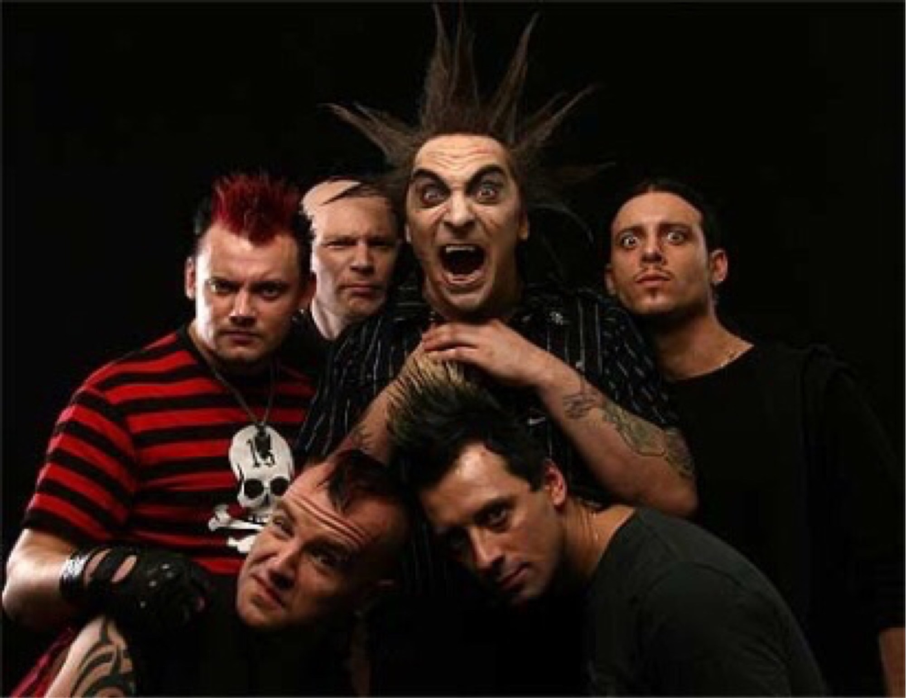

Группа Король и шут
«Король и Шут» (сокращённо «КиШ») — советская и российская хоррор-панк-группа из Санкт-Петербурга. Группа была образована в Ленинграде в 1988 году. После смерти её лидера и одного из основателей Михаила Горшенёва 19 июля 2013 года выступает только в рок-мюзикле TODD. Выделяется своим необычным для классического панк-рока стилем. Песни группы представляют собой небольшие законченные истории, часто в фэнтезийном, мистическом, а также историческом и ужасающем ключе.
Последнее обновление 30 мин. назад
Последнее обновление 30 мин. назад